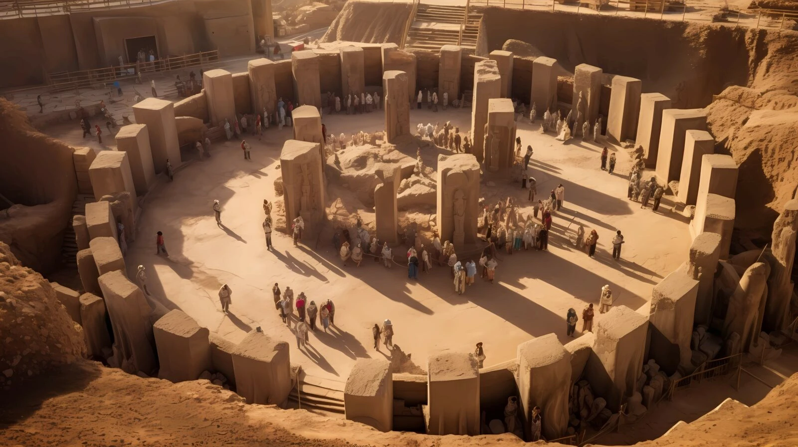
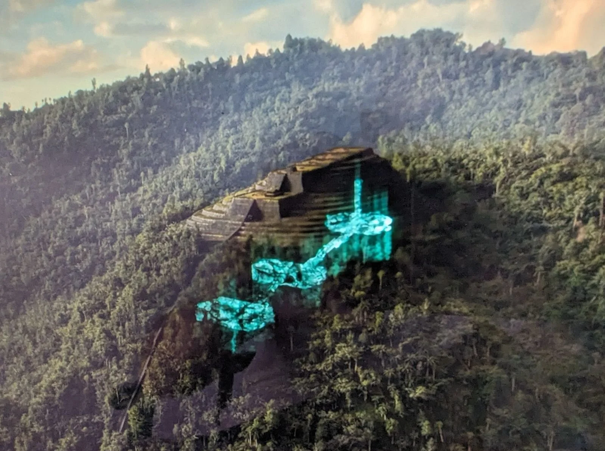
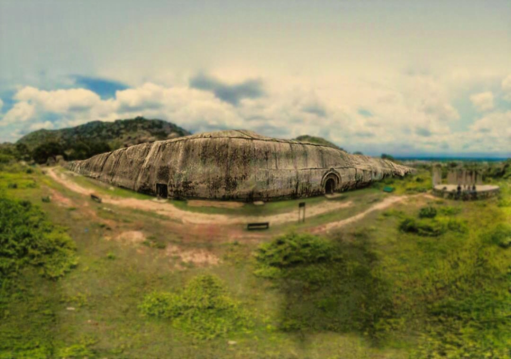
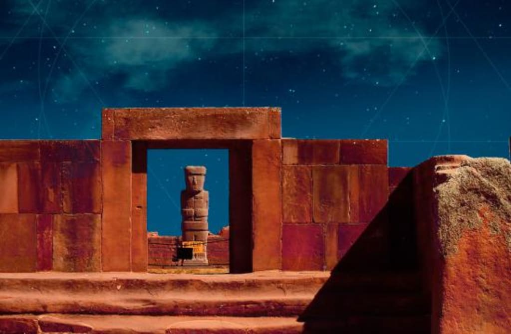
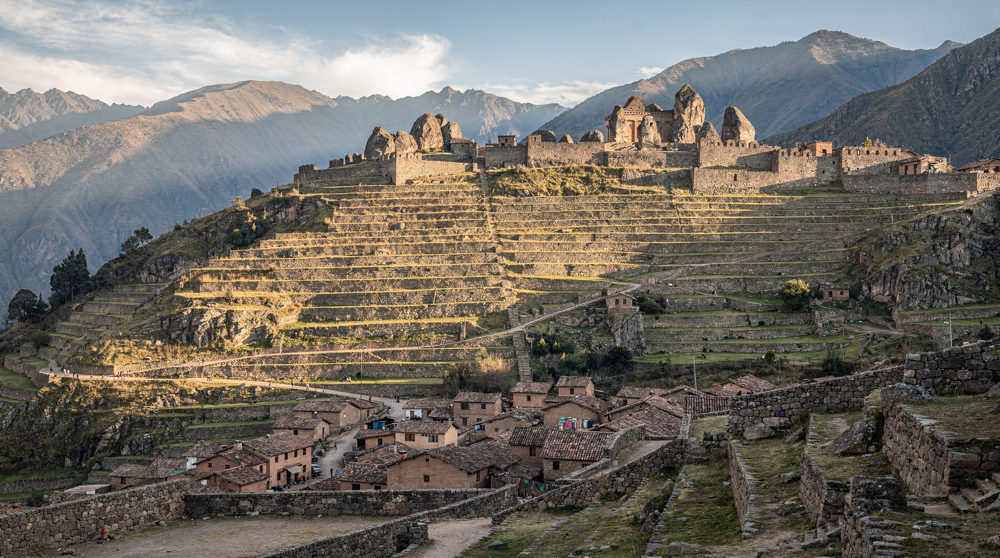
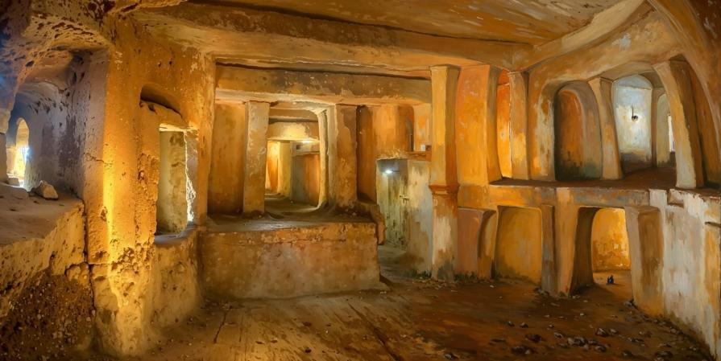
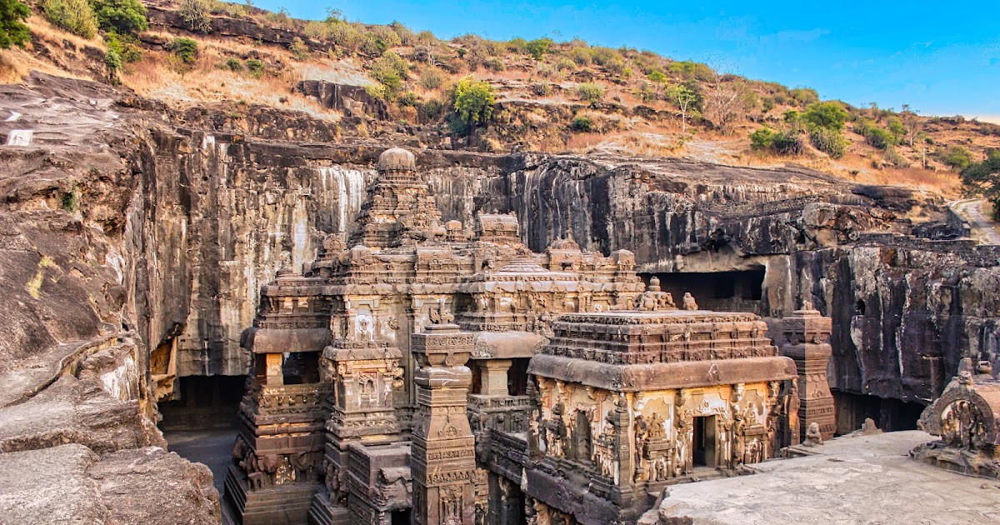
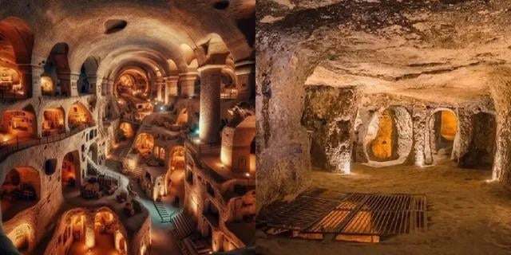
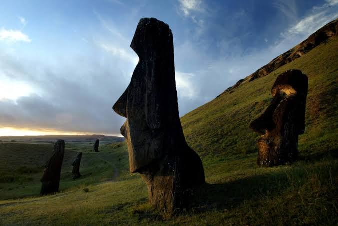

Megaliths, Acoustic Anomalies & Cosmic Cycles
A civilization rising from the ashes of a future cataclysm will not know that the internet ever existed. Just as languages vanish over centuries, our concrete structures will not survive the coming millennia. Yet, an indelible language from past civilizations has been left for us to translate – cosmology and mathematics.
This page maps sites that recur in the “lost knowledge” narrative and keeps three things apart: what archaeology has documented, what has been measured or reported, and what is proposed but unproven. The idea that megastructures were built to carry knowledge across cataclysms is a hypothesis, not a finding.
How to read this page
Every site below separates three layers. Mixing them is how good questions turn into false certainty.
- Documented — mainstream archaeology, dating and engineering studies.
- Reported — measurements or claims that exist but are unreplicated, or not peer-reviewed for every site.
- Contested / speculative — proposals without a verified mechanism or evidence. Kept visible so they can be tested, not believed.
Evidence status of this topic and the public corrections log: methodology · tribunal
What a Resonance Actually Tells Us
Any enclosed space has resonant modes set by its dimensions: longer wavelengths (lower frequencies) fit larger rooms. The relation E = hf describes photon energy and does not apply to sound in a chamber. Whether builders deliberately tuned a space is a separate question from whether a space resonates, and the second does not answer the first.
Resonance depends on room size
For a chamber the size of the King’s Chamber (about 10.5 × 5.2 × 5.8 m, ≈320 m³) a rough room-acoustics estimate gives about one mode per Hz near 110 Hz. A peak at 110–121 Hz is therefore expected in a room this size and does not by itself show tuning. Small chambers have far fewer modes, so a match there is more informative. This is an order-of-magnitude estimate, not a measurement.
The 110 Hz reports
Devereux & Jahn (Antiquity, 1996) reported resonances near 110 Hz in several Neolithic chambers; Cook, Pajot & Leuchter (Time and Mind, 2008) reported in a small EEG pilot (N=30) that 110 Hz tones shifted prefrontal activity. Independent replication and a mechanism are missing, no peer-reviewed set confirms all famous sites, and no study shows the builders intended it.
Epoch I: Earliest Monumental Sites (~11,600 BP and older claims)
Consensus vs. contested claimsGöbekli Tepe (Turkey)
37.2231° N, 38.9223° EDocumented. Pre-Pottery Neolithic ceremonial site in southeast Turkey, dated to roughly 9600–8000 BCE. Hunter-gatherers set T-shaped limestone pillars up to about 5.5 m tall in circular enclosures, which were later backfilled; whether that was deliberate closure is debated. Contested. That it was sealed in response to a global cataclysm (a Younger Dryas impact reading of one pillar relief is proposed and disputed), and that it encodes Sirius or Orion alignments or the precession cycle (proposed by some researchers, not established).

Gunung Padang Pyramid (Indonesia)
6.9926° S, 107.0563° EDocumented. Terraced hill with megalithic basalt columns in West Java. Reported. A 2023 paper claimed construction 14,000–25,000 years ago from coring, radar and radiocarbon dates. Retracted. Archaeological Prospection withdrew it in 2024: the dates came from soil samples not associated with artifacts, so they could not be tied to human activity. The authors dispute the retraction. The age and artificial nature of the deeper layers remain unproven and need independent dating.

Epoch II: Bronze Age to Medieval Monuments (~4,500 – 500 BP)
Documented engineering & disputed add-onsGreat Pyramid of Giza (Egypt)
29.9792° N, 31.1342° EDocumented. Built for Khufu around 2560 BCE (radiocarbon-dated mortar; Wadi al-Jarf papyri). The base is aligned to true north within about 3 arcminutes, and the slope gives a perimeter-to-height ratio near 2π as a by-product of the Egyptian seked system. Reported. A King’s Chamber resonance around 110–121 Hz; a room this size has roughly one mode per Hz there, so a peak is expected. Contested. That the Golden Ratio was designed in, that the structure is far older than 2560 BCE, and that the resonance acts as a “consciousness resonator”.

Barabar Granite Caves (India)
25.0060° N, 85.0690° EDocumented. Rock-cut caves in the Barabar hills (Bihar), made under Emperor Ashoka and his grandson Dasharatha in the 3rd century BCE. The granite interiors carry the mirror-like “Mauryan polish” and a pronounced echo. This is Iron Age work, so the polish is not evidence of technology beyond its era, although the exact finishing method is not fully documented. Contested. That the granite’s quartz content makes the caves piezoelectric resonators that act on consciousness; no mechanism has been verified.

Tiwanaku & Pumapunku (Bolivia)
16.5585° S, 68.6688° WDocumented. Ceremonial centre of the Tiwanaku culture (c. 500–1000 CE), centuries before the Inca. Precisely cut andesite and sandstone blocks, H-shaped motifs and cast copper–arsenic bronze clamps are documented; studies such as Protzen & Nair reconstruct stone-tool, template and abrasion methods. Contested. Claims of “micron-level” machining, industrial-scale tooling, or an origin far older than the Tiwanaku culture lack measurement support.

Ollantaytambo & Sacsayhuamán (Peru)
13.2574° S, 72.2627° WDocumented. Inca royal estate (15th century CE). The Sun Temple’s six large monoliths are red rhyolite quarried across the Urubamba valley and moved with ramps, ropes and labour; field experiments (Protzen) reproduced the fitting methods. Inca masonry is known for tight joints and good, though not perfect, earthquake performance. Blocks at Sacsayhuamán are often estimated above 100 tonnes. Contested. “Vitrified” or acoustically “softened” stone: no physical evidence or known mechanism.

Epoch III: Other Frequently Cited Sites (Neolithic – Medieval)
Sites that recur in the lost-knowledge narrativeĦal Saflieni Hypogeum (Malta)
35.8696° N, 14.5069° EDocumented. Neolithic underground burial and ritual complex cut into limestone on three levels (c. 3300–2500 BCE), older than the Giza pyramids; in the so-called Oracle Room deep voices carry strongly. Reported. A resonance near 110–111 Hz (Cook et al., 2008, and other acoustic surveys). Contested. That it was tuned deliberately or is “synchronized” with Giza: no study links them, and similar frequencies are the only connection.

Angkor Wat (Cambodia)
13.4125° N, 103.8670° EDocumented. Khmer temple complex of the 12th century CE (Suryavarman II): tightly fitted sandstone masonry, extensive moats and reservoirs, and an equinox sunrise over the central tower seen from the western causeway; Mannikka (1996) argues its dimensions encode calendrical numbers. Contested. That the temples map the constellation Draco as it looked in 10,500 BCE. The temples date to the 9th–13th centuries CE, and the match depends on which temples and stars are chosen.
Kailash Monolithic Temple / Ellora (India)
20.0258° N, 75.1780° EDocumented. Rock-cut temple at Ellora (8th century CE, Rashtrakuta period) carved from a basalt cliff from the top down; roughly 200,000 tonnes of removed rock is a commonly cited estimate. It belongs to a long local tradition of rock-cut temples. Contested. Claims of unknown technology or a “cosmic antenna” function: no supporting measurements.

Derinkuyu Underground City (Turkey)
38.3768° N, 34.7345° EDocumented. Underground city in Cappadocia carved into soft volcanic tuff, with ventilation shafts and rolling stone doors. Often described as about 18 levels (around 8 open to visitors) and a capacity near 20,000 people, which is an estimate rather than a count. Used and expanded in the Byzantine era as refuge from raids; an earlier Phrygian phase is debated. Contested. That it was built as shelter from a prehistoric cosmic cataclysm: no dating evidence supports this.

Easter Island (Rapa Nui)
27.1127° S, 109.3497° WDocumented. About 900 moai, carved mostly c. 1250–1500 CE by Polynesian settlers, largely at the Rano Raraku quarry; experiments show upright “walking” transport is feasible with ropes. Contested. That the statues lie on a great circle through Giza, Nazca and Angkor (drawn after choosing the sites, so it is not a test), and that they stabilize Earth’s magnetic field (no mechanism, no data).

Global Megalithic & Subterranean Network
Interactive 3D globe of sites frequently cited in the lost-knowledge narrative. Gold lines only join nearby markers for orientation; they are not evidence of an energy network.
Navigation Controls:
• Click & Drag: Rotate sphere
• Mouse Wheel / Touch: Zoom in / out
• Node Marker: Open site notes
Site Name
Coords
Documented or reported:
Engineering details...
Speculative claims (unverified, not established science):
Metaphysical details...